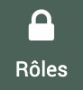
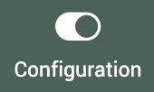

Paramétrages essentiels
Mots clés et référentiels
Techniquement les référentiels et mots clés sont la même chose (possibilité d’arborescence, de rattachement…).
Les référentiels vont correspondre aux arborescences de type contractuel comme la charte ou le plan de gestion, Natura 2000, le plan d’actions… ils sont rattachés automatiquement aux fiches et indicateurs.
Les mots clés sont à définir plus finement pour les analyses et à rattacher à chaque type d’information. Par exemple des types de partenaire à rattacher aux acteurs, des types d’indicateur à rattacher aux indicateurs, des thématiques à rattacher aux fiches…
Les mots clés et référentiels se trouvent dans le module >  , il y a un onglet pour les Mots-clés et un onglet pour les Référentiels.
, il y a un onglet pour les Mots-clés et un onglet pour les Référentiels.
{kind=link}
Paramétrages
Les mots clés et référentiels sont à paramétrer par le référent EVA au début de l’utilisation du logiciel. Ils sont à paramétrer en fonction des besoins en analyses et en export identifiés.
Il est important de faire de la sensibilisation dans les équipes pour que les mots clés et référentiels soient bien remplis, il est possible de mettre en place une notice d’utilisation de ces mots clés.
Il est utile d’évaluer fréquemment l’utilisation des mots clés pour s’assurer que l’on couvre les besoins, on peut rapidement se rendre compte avec les filtres et analyses si certains mots clés sont trop peu ou trop largement utilisés (il est alors possible de les archiver ou fusionner).
Onglet Mots-clés
Les mots-clés se présentent sous forme de tableau avec l’intitulé du mot-clé dans la colonne Nom. En cliquant sur , on peut déroulé l’intitulé pour voir les attributs du mot clé :
{kind=link}
Exemple ici pour le mot-clé Thématiques :

Les autres colonnes indiquent à quel élément du logiciel le mot clé est rattaché. Si la colonne fiche pour un mot clé est coché alors ce mot clé sera accessible dans les fiches.
Pour créer un mot clé il faut cliquer sur le  en haut à droite, pour importer un mot clé il faut cliquer sur
en haut à droite, pour importer un mot clé il faut cliquer sur  (voir documentation import mots clés)
(voir documentation import mots clés)

Lors de la création d’un mot clé, on indique :
s’il est multiple en cochant la case, cela permet de rattacher un même élément à plusieurs attribut du mot clé. Par exemple, si une fiche traite de plusieurs thématiques, si le mot clé Thématiques est multiple on pourra rattacher la fiche à plusieurs thématiques
Avertissement
Quand un mot clé est multiple et une fiche est rattachée à plusieurs attributs il faut faire attention dans les analyse car la totalité de l’action sera prise en compte pour chaque attribut : Par exemple si on a une fiche avec un budget à 10 000 euros rattachés à deux thématiques dans les analyses comment est comptabilisé le budget pour chaque thématique ? -> Par défaut les éléments vont être répétés dans les deux thématiques, donc les 10 000 euros sont comptabilisés deux fois, pour bien faire apparaître les proportions. Par contre dans les totaux, on ne les comptabilise pas deux fois. Lors des analyses, il y a la possibilité de diviser les éléments à parité lorsqu’ils sont rattachés à plusieurs entités d’un mot clé ou référentiel (dans l’exemple attribuer 5 000 euros à chaque thématique), il faut cocher une case pour l’indiquer.
le nom du mot clé (le nom chapeau donc par exemple Thématiques)
à quel élément du logiciel il doit être attribué
- Les éléments auxquels ont peut attribuer des mots-clés :
Acteur : ici désigne uniquement l’acteur rattaché dans l’onglet « Acteurs » des fiches et non les structures elles-mêmes
Contact : ici désigne le contact dans l’annuaire
Fonction contact ?
Convention
Enveloppe (module budget)
Indicateur
Fonction : ici désigne les fonctions modifiables dans l’administration et qui permettent le lien entre structure et contact
Membre : ici désigne les membres dans l’onglet équipe des fiches
Poste de dépense
Poste de recette
Fiche
Structure
Tâche
Territoire
Feuille de temps
Dépense : utile lors de l’ajout d’une dépense dans les fiches
Recette : utile lors de l’ajout d’une recette dans les fiches
Utilisateur
Avertissement
Pour la colonne « Membre » qui désigne les membres de la fiche, il est possible de rattacher qu’un seul mot clé. Il apparaîtra dans la colonne rôle de l’onglet Équipe dans les fichesmais ne se substituera pas si le membre a été ajouté en tant que chef de projet ou validateur.
Après enregistrement de ces éléments le mot clé apparaît dans la liste des mots-clés.
Avertissement
Après le premier enregistrement, il apparaît tout en bas de la page, puis il apparaitra dans l’ordre alphabétique.
Il est possible de :
modifier le mot clé avec

archiver le mot clé avec
 , cela le retire de la liste de choix dans l’élément rattaché (fiche si on a coché fiche) mais ne supprime pas l’historique des données rattachées et le laisse dans la liste des mots-clés pour pouvoir le réactiver plus tard si besoin en cliquant sur
, cela le retire de la liste de choix dans l’élément rattaché (fiche si on a coché fiche) mais ne supprime pas l’historique des données rattachées et le laisse dans la liste des mots-clés pour pouvoir le réactiver plus tard si besoin en cliquant sur  .
.On peut lui ajouter des attributs (exemple : les différentes thématiques) en cliquant sur le
à côté du nom.
{kind=link}
Les attributs sont définis par :
un nom
une description
Un parent : les mots clés étant arborescents on peux rattacher des attributs d’un niveau inférieur à un niveau supérieur, par exemple dans la thématique Biodiversité on peut avoir des sous-thématiques, biodiversité terrestre et biodiversité marine.
L’ordre dans lequel il doit appraître, sachant que le premier à apparaître sera celui avec un ordre 0. Si plusieurs mots clés ont un ordre 0, l’ordre sera par ordre alphabétique.
Après enregistrement de l’attribut il apparaît dans la liste si on clique sur le .
Il est possible de :
modifier l’attribut avec
archiver l’attribut avec
, cela le retire de la liste de choix lors du remplissage du mot clé mais ne supprime pas l’historique des données rattachées et le laisse dans la liste pour pouvoir le réactiver plus tard si besoin en cliquant sur .fusionner en cliquant sur
 : Une boîte de dialogue s’ouvre, la fusion permet de réassocier tous les éléments d’un attribut à un autre. Cela est utile dans le cas où trop d’attribut aurait été définit pour un mot, à un niveau trop fin et le mot clé n’est pas rempli à ce niveau de finesse. Par exemple Biodiversité marine et Biodiversité terrestre ont été associées au début aux fiches puis les utilisateurs ont préféré associer uniquement Biodiversité. Dans ce cas on peut rapatrier toutes les associations avec Biodiversité marine et Biodiversité terrestre en fusionnant ces deux attributs vers Biodiversité. On peut ensuite les supprimer ou les archiver.
: Une boîte de dialogue s’ouvre, la fusion permet de réassocier tous les éléments d’un attribut à un autre. Cela est utile dans le cas où trop d’attribut aurait été définit pour un mot, à un niveau trop fin et le mot clé n’est pas rempli à ce niveau de finesse. Par exemple Biodiversité marine et Biodiversité terrestre ont été associées au début aux fiches puis les utilisateurs ont préféré associer uniquement Biodiversité. Dans ce cas on peut rapatrier toutes les associations avec Biodiversité marine et Biodiversité terrestre en fusionnant ces deux attributs vers Biodiversité. On peut ensuite les supprimer ou les archiver.
Onglet référentiels
Les référentiels se présentent sous forme de tableau avec l’intitulé du référentiel dans la colonne Nom. En cliquant sur , on peut déroulé l’intitulé pour voir les attributs du référentiel :
Exemple ici pour le référentiel Charte DEMO :
{kind=link}
Pour créer un référentiel il faut cliquer sur le en haut à droite (même s’il indique « créer un mot clé »), pour importer un référentiel il faut cliquer sur (voir documentation import mots clés)
{kind=link}
Lors de la création d’un référentiel, on indique :
s’il est multiple en cochant la case, cela permet de rattacher un même élément à plusieurs attribut du référentiel. Par exemple, si une fiche est rattachées à plusieurs mesures d’une charte, si le référentiel Charte est multiple on pourra rattacher la fiche à plusieurs mesures.
Avertissement
Quand un référentiel est multiple et une fiche est rattachée à plusieurs attributs il faut faire attention dans les analyse car la totalité de l’action sera prise en compte pour chaque attribut : Par exemple si on a une fiche avec un budget à 10 000 euros rattachés à deux mesures dans les analyses comment est comptabilisé le budget pour chaque mesure ? -> Par défaut les éléments vont être répétés dans les deux mesures, donc les 10 000 euros sont comptabilisés deux fois, pour bien faire apparaître les proportions. Par contre dans les totaux, on ne les comptabilise pas deux fois. Lors des analyses, il y a la possibilité de diviser les éléments à parité lorsqu’ils sont rattachés à plusieurs entités d’un mot clé ou référentiel (dans l’exemple attribuer 5 000 euros à chaque mesure), il faut cocher une case pour l’indiquer.
le nom du référentiel (le nom chapeau donc par exemple « Charte du parc »)
Après enregistrement de ces éléments le référentiel apparaît dans la liste des référentiels.
Avertissement
Après le premier enregistrement, il apparaît tout en bas de la page, puis il apparaitra dans l’ordre alphabétique.
Il est possible de :
modifier le référentiel avec
archiver le référentiel avec
, cela le retire de la liste de choix dans les fiches et indicateurs mais ne supprime pas l’historique des données rattachées et le laisse dans la liste des référentiels pour pouvoir le réactiver plus tard si besoin en cliquant sur .On peut lui ajouter des attributs (exemple : les différents axes et mesures de la charte) en cliquant sur le
à côté du nom.
Les attributs sont définis par :
un nom
une description
Un parent : les référentiels étant arborescents on peux rattacher des attributs d’un niveau inférieur à un niveau supérieur, par exemple dans le référentiel Charte on peut avoir des axes, qui sont sous-divisés en orientations, qui sont sous-divisées en mesures…
L’ordre dans lequel il doit appraître, sachant que le premier à apparaître sera celui avec un ordre 0. Si plusieurs référentiels ont un ordre 0, l’ordre sera par ordre alphabétique.
Après enregistrement de l’attribut il apparaît dans la liste si on clique sur le .
Il est possible de :
modifier l’attribut avec
archiver l’attribut avec
, cela le retire de la liste de choix lors du remplissage du référentel mais ne supprime pas l’historique des données rattachées et le laisse dans la liste pour pouvoir le réactiver plus tard si besoin en cliquant sur .fusionner en cliquant sur
: Une boîte de dialogue s’ouvre, la fusion permet de réassocier tous les éléments d’un attribut à un autre. Cela est utile dans le cas où trop d’attribut aurait été définit pour un référentiel, à un niveau trop fin et le référentiel n’est pas rempli à ce niveau de finesse. Par exemple des sous-mesures ont été créé et ont été associées au début aux fiches puis les utilisateurs ont préféré associer uniquement les mesures. Dans ce cas on peut rapatrier toutes les associations avec Bles sous-mesures en fusionnant ces attributs vers la mesure. On peut ensuite les supprimer ou les archiver.
Exemples de mots clés et référentiels
Liste non-exhaustive d’exemple de mots-clés et référentiels à adapter aux besoins de chacun. Pour les mots clés il est indiqué à quel type d’élément ils peuvent être associés.
Mots clés :
Thématiques (Agriculture, Alimentation , Biodiversité, Bâti, Climat, Culture, Economie, Economie sociale et solidaire (ESS), Education, Energie, Forêt , Gouvernance partagée, Mobilité, Paysages, Tourisme, Transition, Urbanisme…) associé aux fiches
Rôle du parc (Maîtrise d’oeuvre, Maîtrise d’ouvrage, Conseil, Opérateur, Rédacteur d’avis, Partenaire…) associé aux fiches
Public cible (Agents du parc, Agriculteurs, Associations, Élus, Jeunes, Habitants, Institutions, Professionels, Scolaires, Séniors, Touristes, Usagers…) associé aux fiches
Communication autour de l’action (Affichage, Presse écrite, Radio, Réseaux des parcs, Réseaux locaux, Réseaux sociaux, Site internet du Parc, Site internet dédié, Supports imprimés, Télévision…) associé aux fiches
Instances de gouvernance (Bureau, COPIL, COTECH, Commision…) associé aux fiches
Pôles ou Services associé aux fiches et utilisateurs
Rôle partenaire (Appui technique, Bénéficiaire, Financeur, Maîtrise d’oeuvre, Partenaire, Prestataire…) associé aux acteurs dans les fiches
Groupes de contacts (Acteurs du tourisme, Agriculteurs, Commission, Conseil scientifique, Observatoires…) associé aux contacts dans l’annuaire
Types d’activité (Administratif, Communication, Conseil, Gouvernance, Inventaire…) associé aux feuilles de temps
Type d’indicateur (État, Pression, Réalisation, Résultat, Impact…) associé aux indicateurs
Échelle territoriale (Agglomération, Commune, EPCI, Site Natura…) associé aux territoires
…
Référentiels :
Charte du parc ou plan de gestion avec l’arborescence
Contrat de parc avec les régions
Programme d’action
Référentiel d’évaluation avec Enjeux et Questions Évaluatives
…
Les utilisateurs
Chaque parc a son propre EVA définit par un URL au nom du parc. Dans un parc, chaque utilisateur se connecte via un identifiant unique. La création d’utilisateur, au-delà de permettre un accès à EVA permet de rattacher des informations aux utilisateurs. Lorsqu’il est connecté, l’utilisateur insère des données en son nom par défaut.
Il existe différentes possibilités d’accès au logiciel qui sont gérés dans les rôles, si vous souhaitez rattacher vos utilisateurs à des rôles autres que les rôles dajà créés, il faudra d’abord créer les nouveaux rôles avant de créer l’utilisateur.
Création des utilisateurs
Les utilisateurs sont accessibles dans le module > .
{kind=link}
Les fonctionnalités de tableau et d’ajout sont détaillées dans la partie Tableaux et Ajouts des fonctionnalités générales.
Pour les imports de contacts voir : Import Utilisateurs
En cliquant sur le Nom d’utilisateur on accède aux détails de l’utilisateur.
Les champs obligatoires sont :
Civilité (Mme. Mr. ou Non binaire)
Prénom
Nom
Adresse email
Nom d’utilisateur
Mot de passe
Rôle (voir plus bas)
Couleur : la couleur est importante pour les agendas, lorsque vous affichez plusieurs agendas, chaque utilisateur apparaîtra avec sa couleur (qui est la même par défaut)
Note
Le mot de passe affiche une longue série de points lorsqu’il est masqué mais cela ne veut pas dire qu’il est aussi long.
Les options sont :
rattacher des mots clés.
L’option Inactif en haut à droite. Cette option est utile lorsqu’un collaborateur quitte la structure pour retirer les accès aux comptes sans perdre les données associées.

L’option tableau redimensionnable : si la case est cochée, lorsque la souris survolent des colonnes dans EVA, elles s’agrandiront pour afficher le contenu entier. Il est souvent préféré visuellement de garder une taille de colonne fixe mais cela est à l’appréciation de chacun.
Note
Lorsque l’utilisateur est créé, il ne reçoit pas automatiquement un email de création de compte. Il faut donc l’informer de son nom d’utilisateur et de son mot de passe, qu’il pourra aller modifier par la suite. Voir Tutoriels début dans EVA
Gestion des rôles
Les rôles permettent de contrôler les accès au logiciel pour les utilisateurs, on peut ainsi créer des rôles de types administrateur avec accès partout, un rôle utilisateur avec quelques accès restreint, un rôle en consultation pour les externes au parc… La logique des rôles est importantes pour ne pas donner des accès de modification ou de suppression de données importantes.
Les rôles peuvent être créés dans le module > 
{kind=link}
Les rôles sont définis par des accès « Créer », « Voir », « Modifier » et « Supprimer ». Pour chaque élément du logiciel on peut cocher un ou plusieurs de ces accès. La dénomination des éléments est assez logique dans la plupart des cas.
Pour les rôles moins évidents :
Application > configuration régit les accès à >  (choix des modules, traduction des niveaux et champs de fiches, aide au remplissage…)
Groupe de champs et champs : désigne les champs créés dans >

Accueil et Accueil général : l’accueil général est celui créé par le référent EVA, il se trouve en début d’accueil pour tous les utilisateurs, l’accueil simple est celui créé par chaque utilisateur qui peut rajouter à la suite de l’accueil commun ses propres affichages
Mots-clés : ici est regroupé mots-clés et référentiels sans distinction, Groupe réfère au mot clé ou référentiel chapeau (ex : thématiques ou charte), mot-clé réfère aux attributs (ex ; biodiversité ou Axe 1)
Type d’absence et paramétrage des heures sont des paramétrages des temps accessible dans >

{kind=link}
Rôles avec des options :
Propriétaire vs Tous : si Propriétaire seulement est choisi cela permet l’accès aux éléments créés par l’utilisateur mais pas les autres, si Tous est choisi cela permet l’accès à tous les éléments. Dans le cas des requêtes, cela ne s’applique pas aux requêtes partagées qui seront visible par tous mais il est utile de limiter la vue aux requêtes propriétaires pour ne voir que celle partagée et celle que l’on a créé
Dépense et recette : on peut choisir à quel type de dépense le rôle s’applique, habituellement, on sélectionne tout
Fiches : on peut choisir les accès en fonction des statuts des fiches
IMPORTANT : l’accès aux rôles est à bien définir. Il est important de ne pas donner d’accès autre que « Voir » pour les rôles aux non-administrateur et de ne pas donner un accès « Modifier » à « Utilisateur : rôle » car sinon l’utilisateur pourra modifier le rôle qui lui a été donné et on perd l’intérêt des rôles.
Avertissement
Les rôles ont parfois des dépendances non logiques qui bloquent des accès qui ne devraient pas. Cette anomalie est en cours de résolution et est suivie dans le ticket suivant n°268
Dans certains cas : si l’élément est en accès « Voir » uniquement il n’est pas visible dans le logiciel, par contre il peut être accessible par l’URL, par exemple les rôles sont accessible via nomduparc.evaparc.net/role ou en cliquant sur un role depuis le module utilisateur
Exemple de rôles :
Administrateur : accès à tout pour les référents EVA et l’assistance
- Utilisateuraccès pour les chargés de mission avec pour principal différence avec le rôle admin :
pas d’accès à la configuration
accès restreint aux éléments budgétaires
accès restreint aux modifications de l’annuaire
accès restreint aux modifications des groupes de champs
accès restreint aux modifications des mots clés et référentiels
accès restreint aux modifications des modèles de fiche
accès restreint aux modifications des paramétrages des temps (voir enlever tout accès si non utilisé)
modification des utilisateurs propriétaire seulement et pas de modifcation du rôle utilisateur
accès restreint aux modifications du rôle
plusieurs élément sans accès « supprimer »
Configuration
Dans l’administration, le sous-module permet un accès à quatre sous-onglets (nombre qui peut varier en fonction de votre configuration initiale par le prestataire). Ces sous-onglets sont dédiés au référent EVA. Ils permettent en général de paramétrer le logiciel pour le rendre plus lisible par les utilisateurs (activation des modules et traductions).
Avertissement
Ne pas oublier de sauvegarder à chaque modification !
Activation des modules
Dans ce sous-onglet, on peut choisir d’activer ou non les modules. Vous pouvez aussi activer ou désactiver les liaisons avec les logiciels comptables (si elles ont été paramétrées) et le logiciel PostParc via cette interface.
Lorsqu’un module est désactivé, il n’est plus visible mais les données qui ont pu être rentrées dans le module ne sont pas supprimées. Si l’on souhaite le réactiver par la suite, elles seront toujours présentes.
La désactivation des modules non-utilisés permet une approche plus fluide du logiciel EVA par les utilisateurs car l’environnement paraît moins chargé.
Avertissement
Désactiver l’accueil semble ne pas fonctionner, pour désactiver l’accueil on peut supprimer tout les éléments définis dans l’accueil, par défaut l’accueil affichera alors le module fiche.
Traductions
Dnas ce sous-onglet, on peut définir des traductions, c’est à dire changer certains mots de vocabulaire pour mieux être plus aligné avec le vocabulaire utilisé dans le parc et ainsi faciliter la compréhension par les utilisateurs.
Les niveaux
Les niveaux de fiche peuvent être traduits dans EVA. Les niveaux de fiche sont définis par la place dans l’arborescence (ils ne sont pas liés aux modèles de fiche). Le niveau 0 est le niveau plus élevé, ensuite le niveau 1…
Par exemple, on peut définir ici que le niveau 0 correspond à un projet qui pourra être subdivisé en plusieurs sous-projets (niveau 1). Ces sous-projets pourront être divisés en actions (niveau 2).
{kind=link}
Dans le module fiche, lorsque l’on créé une fiche, elle sera par défaut un projet, si on la rattache à une autre fiche projet via la case « rattachement », elle deviendra un sous-projet. Si on la rattache à une fiche sous-projet, elle deviendra une action.
Note
Plus de détails sur la différence entre modèles de fiches et niveaux de fiches dans la FAQ
Champs de la fiche
Certains champs de la partie générale de la fiche peuvent être renommés pour s’adapter à vos besoins. Par exemple le champ « Code » peut être renommé en « Code analytique », le champs « Objectifs » peut être renommé en « Livrables »…
- Les champs modifiables de la partie générale des fiches (et dans le tableau des fiches pour les colonnes et filtres) sont :
Code
Titre
Rattachement
Descriptif
Bilan
Objectifs
Bilan des années antérieures
Contexte et motif
Date de programmation
Date de démarrage prévue
Date de fin prévue
Date de démarrage effective
Date de fin effective
Maîtrise d’ouvrage externe
Maître d’ouvrage
Statut financier
Codes financier
Temps prévu
- Les noms de sous-onglet modifiable :
Équipe (modifie dans le tableau des fiches pour recherche par filtre mais pas colonnes)
Acteurs (modifié dans le tableau des fiches aussi)
- Les membres de l’équipe modifiables (modifié dans le tableau de fiches aussi) :
chef de projet
validateur
- Les champs modifiés dans le tableau des fiches :
statut
Membres de l’équipe (modifie seulement pour le titre de la colonne du tableau)
Accès réseau
Avertissement
Renommer « Avancement » ne semble pas fonctionner.
Tooltip = InfoBulle
Les Tooltip permettent de donner une instruction courte aux utilisateurs pour remplir les champs. Ils sont disponibles pour un certain nombre de champ de la fiche.
Ils apparaissent à côté du titre lorsqu’ils sont survolés par la souris :
{kind=link}
Placeholder = Aide au remplissage
Les placeholder permettent de donner une instruction plus longue que les tooltip ou complémentaire pour remplir les champs. Ils sont disponibles pour un certain nombre de champ texte long de la fiche.
Ils apparaissent en grisé dans le cadre lorsqu’il est vide et disparaissent au remplissage.
{kind=link}
Commandes
À compléter
Cet onglet permet de lancer manuellement une synchronisation comptable ou PostParc si elles ont été paramétrées.
Code
Ce champ est utile si vous utilisez la génération de code automatique pour les fiches. Ces codes sont créés par défaut avec l’année de création (deux derniers chiffres, ex : 23 pour 2023), les lettres PRJ (pour projet), une série de 0 et le numéro du projet.
Il s’incrémente automatiquement à chaque nouveau projet. Si on a créé des projets que l’on a finalement supprimer, on peut réinitialiser le numéro ici pour ne pas qu’il y ait de trou dans la numérotation.
Pour utiliser le code automatique, dans une fiche il faut cliquer sur le code barre à côté du champ « Code ».
{kind=link}